library(ggplot2)
boats <- read.csv("boats.csv")Homework 1
Load the dataset
1. Variable analysis
The dataset comes from the online website boattrader.com, which is the marketplace for buying and selling boats in the United States.
1. A.
Five W’s
Who?
- The respondents/subjects/participants are boat dealers.
What?
- The experimental units are boats. Each row is a record for a boat to sell.
When?
- The earliest boat listing date recorded is September 14th, 2011. The latest is November, 2nd, 2019.
Where?
- The boat marketplace described is in the United States. Listings include cities like Bridgeport, CT; Reston, VA; Miami, FL; etc.
Why?
- Provide valuable information about the boat marketplace in the United States, like variations of price, types of models, most interesting locations, etc.
This dataset (from boattrader.com) is a collection of boats listed by boat dealers from 2011 to 2019 from locations in the United States to help potential buyers or data analysts better analyze this specific market.
Variable type
| Variable name | Type | Unit |
|---|---|---|
| id | Categorical | Not applicable |
| type | Categorical | Not applicable |
| boatClass | Categorical | Not applicable |
| year | Quantitative (discrete) | No unit |
| condition | Categorical | Not applicable |
| length_ft | Quantitative (continuous) | ft (feet) |
| beam_ft | Quantitative (continuous) | ft (feet) |
| dryWeight_lb | Quantitative (continuous) | lb (pounds) |
| price | Quantitative (continuous) | $ (dollars) |
| sellerID | Categorical | Not applicable |
1. B. Literature review
News article:
Ten things to consider when buying a boat - https://www.thesilverlining.com/westbendcares/blog/ten-things-to-consider-when-buying-a-boat
Expectations:
- Unused boats are more expensive. The article mentions that new boats are a much better choice because they are more durable, repairing them won’t cost much, etc. Therefore, I expect that a boat seller indicating new as their boat’s
conditionwill probably raise itspricebecause they know their offer will have much more demand. - Big boats are more expensive. Naturally, companies require more time, materials, and money to manufacture big boats. Therefore, the boat sellers will have bought them at high prices. And because boat sellers would usually expect a gain margin from selling their boat, they will raise the price even more. Thus, I expect that the bigger the boat’s
length, the bigger itsprice. - A recently manufactured boat is unused. Naturally, boats that are manufactured recently can either be left unused or very little used by them. This is why I expect that as the
yearis recent, the probability forconditionto be equal to new is high.
1. C. Describing the data
# boats_prices: contains prices as numeric values without NA values
boats_prices <- na.omit(as.numeric(boats$price))
# Histogram generation
hist(boats_prices,
main = "Histogram of Boat Prices",
xlab = "Price (in dollars)",
ylab = "Number of boats",
col = "skyblue",
border = "black",
breaks = 100) # 100 bars, adjustable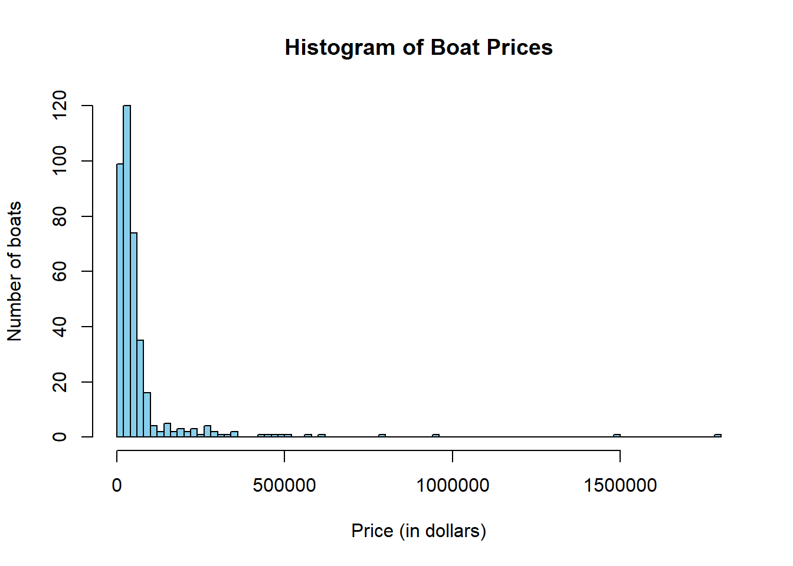
boxplot(boats_prices,
main = "Box plot of boat price",
ylab = "Price",
col = "skyblue",
border = "black",
horizontal = TRUE,
notch = TRUE)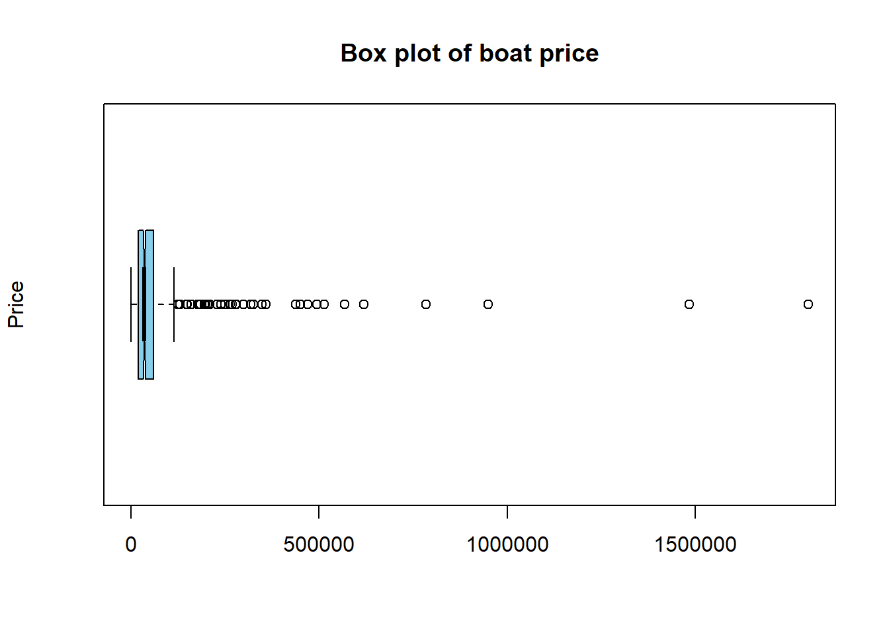
The three features of quantitative data
Shape: the histogram is right-skewed (or positive-skewed), as most boats have smaller prices.
Center: the median is the appropriate measure of the center than the mean because the shape of the data is skewed.
Spread: the data is spread very wide, as the price range is quite important.
The observed distribution is not very surprising because first of all, we expect to have a wide range of prices in the boat marketplace. However, boat sellers will tend to sell their boats at lower prices because they want to maximize the probability of making deals with customers. Needless to say for customers, the price is generally one of the most important factors.
library(kableExtra)
summary <- data.frame(
Minimum = min(boats_prices),
FirstQuartile = quantile(boats_prices, 0.25),
Median = median(boats_prices),
ThirdQuartile = quantile(boats_prices, 0.75),
Maximum = max(boats_prices)
)
rownames(summary) <- NULL
summary_table <- kable(summary, caption = "The 5 number summary of boat prices") %>%
kable_styling(full_width = FALSE)
add_header_above(c(" " = 1, "Boat Prices" = 5)) Boat Prices
1 5 summary_table| Minimum | FirstQuartile | Median | ThirdQuartile | Maximum |
|---|---|---|---|---|
| 519 | 19995 | 35680 | 59947.5 | 1799900 |
# Calculate the standard deviation of boat prices
prices_sd <- sd(boats_prices)
prices_sd[1] 153042.5prices_mean <- mean(boats_prices)
prices_mean[1] 71643.59Q1 <- quantile(boats_prices, 0.25)
Q3 <- quantile(boats_prices, 0.75)
IQR <- Q3 - Q1
IQR 75%
39952.5 We notice that the mean price ($71,643) is two times smaller than the standard deviation ($153,042.5), indicating that the standard deviation is much bigger than the mean.
We notice that the IQR of boat prices ($39,952.5) is almost 4 times smaller than the standard deviation ($153,042.5), indicating that the standard deviation is much bigger than the IQR.
Therefore, the boats’ prices vary widely from the mean and the IQR. The range of prices in this dataset is very big, which makes sense considering that the lowest price recorded is $519, and the highest is $1,799,900. Such results indicate that there might be a long tail in the distribution: the prices are potentially skewed.
Based on the histogram that we had generated before, the boat prices are indeed right-skewed. Therefore, this histogram would benefit from a transformation to make it look more symmetric. The log is a good choice.
# Log transformation of boat prices
boats_prices_log <- log(boats_prices)
hist(boats_prices_log,
main = "Histogram of boat prices (log transformed)",
xlab = "log(price)",
ylab = "Frequency",
col = "skyblue",
border = "black",
breaks = 50)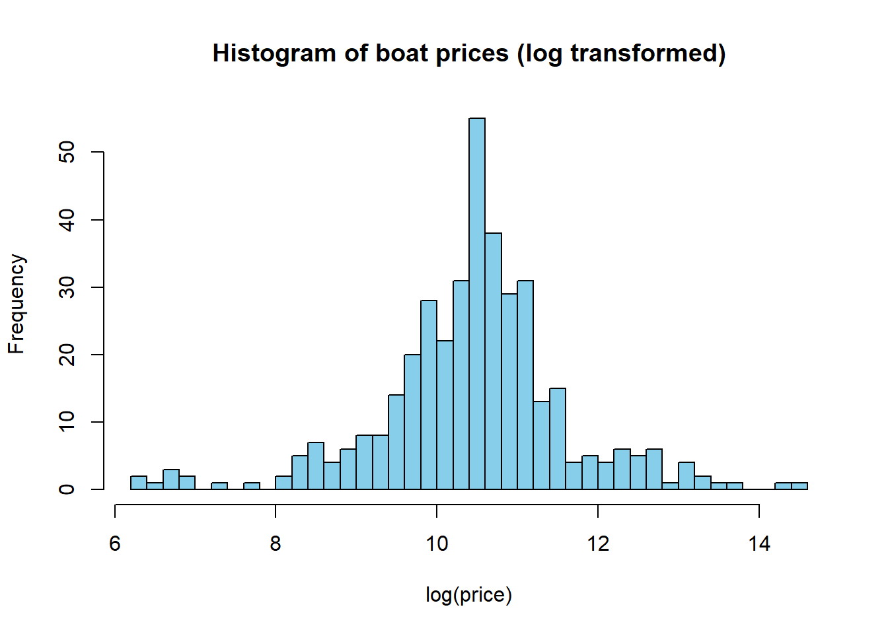
boats$log_price <- log(boats$price)
ggplot(boats, aes(x = condition, y = log_price, fill = condition)) +
geom_boxplot() +
labs(title = "-- Boxplot of log(price) by condition",
x = "Condition",
y = "log(price)") +
theme_minimal()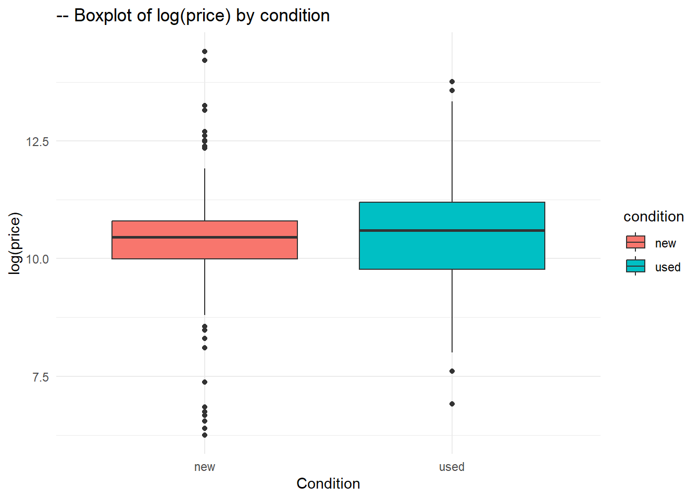
Based on the box plots above, we notice that both used and new boats have pretty close medians. However, the new boats have a smaller IQR, indicating that the price range is much less spread out than the used boats that have a bigger IQR. Used boats seem to have more price variety than the new boats. The important presence of outliers in the new boats compared to the used ones indicates that we are more likely to find extravagant prices (whether very expensive or very cheap) in the new boats section, compared to the used section.
1. D. Comparing categorical variables
library(dplyr)
Attaching package: 'dplyr'The following object is masked from 'package:kableExtra':
group_rowsThe following objects are masked from 'package:stats':
filter, lagThe following objects are masked from 'package:base':
intersect, setdiff, setequal, union# Without adding margins
contingency_table <- table(boats$type, boats$fuelType)
print(contingency_table)
diesel gasoline other
power 53 18 136 172
sail 0 5 1 1
unpowered 1 0 0 0# Adding margins
contingency_table_with_margins <- addmargins(contingency_table)
print(contingency_table_with_margins)
diesel gasoline other Sum
power 53 18 136 172 379
sail 0 5 1 1 7
unpowered 1 0 0 0 1
Sum 54 23 137 173 387Comment: the column with no name corresponds to no fuel used. (fuelType = ““)
Adding margins gives us the corresponding sums of frequencies. We are trying to see if some fuel types are becoming less popular and therefore more difficult to sell. The sums give us the number of boats using certain types of fuels so that we see which fuel types are more popular in the market. Thus, the margins are a good indicator to interpret the data.
library(ggplot2)
boat_counts <- table(boats$type)
pie_data <- data.frame(type = names(boat_counts), count = as.numeric(boat_counts))
ggplot(pie_data, aes(x = "", y = count, fill = type)) +
geom_bar(stat = "identity", width = 1) +
coord_polar("y", start = 0) +
labs(title = "Distribution of Boats by Type", fill = "Boat Type") +
theme_void() +
theme(legend.position = "bottom")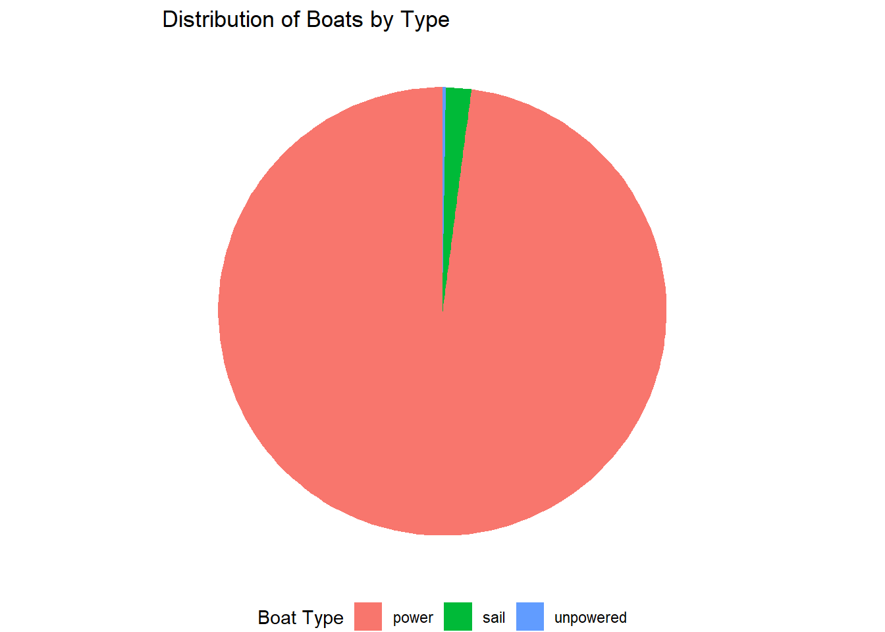
# Frequencies to proportions
proportions_table <- prop.table(contingency_table_with_margins, margin = 2)
print(proportions_table)
diesel gasoline other Sum
power 0.490740741 0.391304348 0.496350365 0.497109827 0.489664083
sail 0.000000000 0.108695652 0.003649635 0.002890173 0.009043928
unpowered 0.009259259 0.000000000 0.000000000 0.000000000 0.001291990
Sum 0.500000000 0.500000000 0.500000000 0.500000000 0.500000000The proportions table is very important because it gives the overall constitution of the market based on the two variables we selected (the boat’s type and the fuel’s type.) For example, from this proportions table, we can deduce that approximately 49% of the boats in the dataset are power boats that use gasoline.
Based on these results, I recommend staying away from unpowered boats and sailboats. Powered boats seem to be much more in demand in the market. Particularely, powered boats using gasoline fuel types seem to be very present.
1. E. Understanding and comparing distributions
5 numbers summary of length
boats_lengths <- na.omit(as.numeric(boats$length_ft))
summary2 <- data.frame(
Minimum = min(boats_lengths),
FirstQuartile = quantile(boats_lengths, 0.25),
Median = median(boats_lengths),
ThirdQuartile = quantile(boats_lengths, 0.75),
Maximum = max(boats_lengths)
)
rownames(summary2) <- NULL
summary_table <- kable(summary2, caption = "The 5 number summary of boat prices") %>%
kable_styling(full_width = FALSE)
add_header_above(c(" " = 1, "Boat Prices" = 5)) Boat Prices
1 5 summary_table| Minimum | FirstQuartile | Median | ThirdQuartile | Maximum |
|---|---|---|---|---|
| 1 | 18.58 | 21.5 | 25 | 120 |
boats_lengths <- na.omit(as.numeric(boats$length_ft))
boxplot(boats_lengths,
main = "--- Boxplot of boat lengths",
xlab = "Length (in ft)",
ylab = "Boats",
col = "skyblue",
border = "black")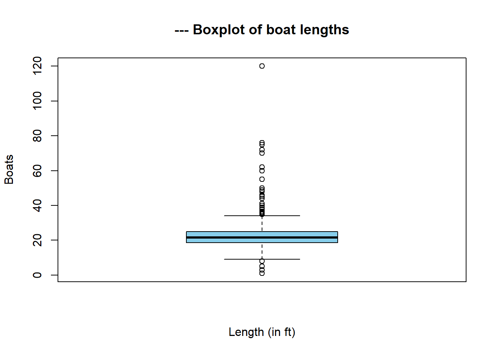
Checking for outliers in length
Q1 <- summary2$FirstQuartile
Q3 <- summary2$ThirdQuartile
IQR <- Q3 - Q1
# Lower and upper fences
lower_bound <- Q1 - 1.5 * IQR
upper_bound <- Q3 + 1.5 * IQR
length_outliers <- boats_lengths[boats_lengths < lower_bound | boats_lengths > upper_bound]
print(length_outliers) [1] 35.00 3.00 75.00 41.00 55.00 8.00 46.00 36.00 35.00 39.00
[11] 1.00 1.00 72.00 49.00 35.00 60.00 41.00 120.00 48.00 70.00
[21] 35.00 5.00 1.00 38.00 37.92 62.00 35.58 37.99 35.00 48.00
[31] 44.00 45.00 45.00 40.00 35.00 38.00 35.00 1.00 35.00 1.00
[41] 45.00 1.00 36.00 36.58 50.00 41.00 50.00 1.00 76.00 36.00
[51] 39.00 38.00I believe that there could be some anomalies in the data, like the 1ft values. However, most of the other lengths seem to make sense, after some research.
boxplot(length_ft ~ fuelType,
data = boats,
main = "Boxplot of Boat Lengths by Fuel Type",
xlab = "Fuel Type",
ylab = "Length (in feet)",
col = "skyblue",
border = "black")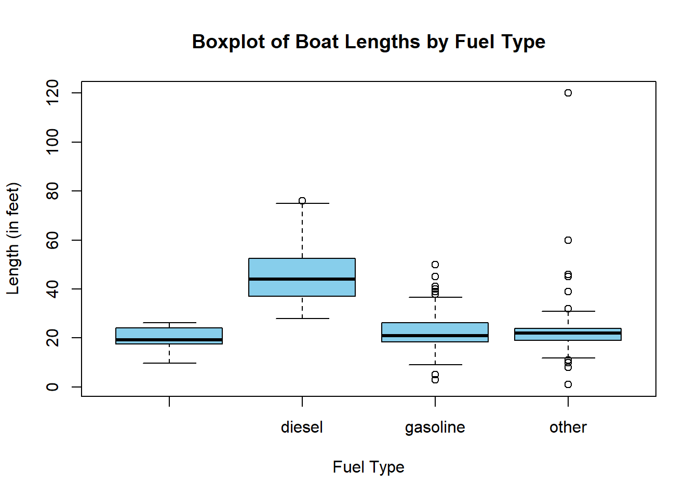
From this display, we can deduce that the diesel fuel type has more variability in boat length, with only one outlier. Moreover, the gasoline fuel type and all other fuel types have less variability, and also present skewness in the data, in addition to a significant number of outliers. Therefore, we can benefit from re-expressing the variable length_ft.
1. F. The Normal Distribution
The Normal model of human weight: W ~ N(m, std²)
- m: mean weight in the human population
- std: standard deviation of weight in the human population
In a 2006 study of Americans, the average weight was approximately 70 kilos with a standard deviation of 11 kilos.
Therefore, we can formally denote the Normal model in the United States: W ~ N(70, 11²)
boats_less_than_20ft <- boats[boats$length_ft < 20, ]
selected_boats <- boats_less_than_20ft[3:8, ]
print(selected_boats) id type boatClass make model year
10 7055543 power power-jon Tracker Topper 1036 Riveted Jon 2019
11 6219877 power power-other Yamaha Outboards F20 2019
15 7041942 power power-bass Nitro Z18 2019
16 6792969 power power-bass Nitro Z18 2019
19 6700594 power power-aluminum Tracker Targa V-18 WT 2018
23 6969120 power power-center G3 Gator Tough 18 CCT 2019
condition length_ft beam_ft dryWeight_lb hullMaterial fuelType numEngines
10 new 9.83 4.33 112 aluminum 1
11 new 3.00 1.00 NA other gasoline 1
15 new 18.67 7.83 1700 fiberglass gasoline 1
16 new 18.67 7.83 1700 fiberglass gasoline 1
19 new 19.08 8.50 2060 aluminum 1
23 new 18.08 6.67 870 aluminum gasoline 1
totalHP maxEngineYear minEngineYear engineCategory price sellerId
10 0 NA NA outboard 789 2933
11 20 NA NA outboard 3299 34547
15 150 NA NA outboard 34155 1114
16 150 NA NA outboard 34585 155595
19 150 NA NA outboard 29945 60580
23 90 2019 2019 outboard 23499 34692
city state zip created_date created_month created_year
10 Millville NJ 08332 2019-04-19 4 2019
11 Searcy AR 72143 2017-04-28 4 2017
15 New Braunfels TX 78132 2019-04-08 4 2019
16 Hoffman Estates IL 60192 2018-08-01 8 2018
19 Bridgeport CT 06608 2018-05-03 5 2018
23 Goldsboro NC 27534 2019-01-25 1 2019
log_price
10 6.670766
11 8.101375
15 10.438664
16 10.451175
19 10.307118
23 10.064713z_scores <- c(-2, -1, 0, 1, 2)
boat_table <- data.frame(matrix(NA, nrow = 6, ncol = length(z_scores)))
colnames(boat_table) <- z_scores
for (i in 1:6) {
boat <- selected_boats[i, ]
boat_table[i, ] <- boat$length_ft + z_scores
}
print(boat_table) -2 -1 0 1 2
1 7.83 8.83 9.83 10.83 11.83
2 1.00 2.00 3.00 4.00 5.00
3 16.67 17.67 18.67 19.67 20.67
4 16.67 17.67 18.67 19.67 20.67
5 17.08 18.08 19.08 20.08 21.08
6 16.08 17.08 18.08 19.08 20.08z_scores <- c(-2, -1, 0, 1, 2)
passenger_weight <- 70
max_passengers <- boat_table + z_scores * passenger_weight
print(max_passengers) -2 -1 0 1 2
1 -132.17 -61.17 9.83 80.83 151.83
2 -69.00 2.00 73.00 144.00 -135.00
3 16.67 87.67 158.67 -120.33 -49.33
4 86.67 157.67 -121.33 -50.33 20.67
5 157.08 -121.92 -50.92 20.08 91.08
6 -123.92 -52.92 18.08 89.08 160.08For boats under 20 feet, a rough rule of thumb is that the maximum weight capacity in kilograms of a boat is approximately the length in feet times the width (or beam) of the boat times 5.
Maximum weight capacity(kg) = length(ft) * beam(ft) * 5
selected_boats$max_weight_capacity <- selected_boats$length_ft * selected_boats$beam_ft * 5
print(selected_boats$max_weight_capacity)[1] 212.8195 15.0000 730.9305 730.9305 810.9000 602.9680The maximum of passengers that a boat can hold is its maximum weight capacity by the average weight per passenger.
Maximum passengers = maximum weight capacity(kg) / average weight per passenger(kg)
The formula for z scores is: z = (y - mean) / std
| -2 (48kg) | -1 (59kg) | 0 (70kg) | 1 (80kg) | 2 (92kg) | |
|---|---|---|---|---|---|
| Boat 1 (213kg) | 4 | 4 | 3 | 3 | 2 |
| Boat 2 (15kg) | 0 | 0 | 0 | 0 | 0 |
| Boat 3 (731kg) | 15 | 12 | 10 | 9 | 8 |
| Boat 4 (731kg) | 15 | 12 | 10 | 9 | 8 |
| Boat 5 (811kg) | 17 | 14 | 12 | 10 | 9 |
| Boat 6 (603kg) | 13 | 10 | 9 | 8 | 7 |
Topper 1036 Riveted Jon: 3 passengers: The manufacturer chose the exact number of passengers.
Yamaha Outboards F20: 0 passengers (motor, no passengers are supposed to board it)
Nitro Z18: 4 passengers: The manufacturer chose this value to ensure maximum safety, as our table showed that around 10 passengers is okay.
2. Two variables analysis
2. A. Relationship between variables
#outlier_details <- boats[outliers, c("id", "price", "length_ft")]
#kable(outlier_details, caption = "Details of outliers")
#model <- lm(price ~ length_ft, data = boats)
#residuals <- residuals(model)
#outlier_details <- which(abs(residuals) > 2 * sd(residuals))
#ggplot(boats, aes(x = length_ft, y = price)) +
# geom_point() +
# geom_smooth(method = "lm", se = FALSE, color = "brown") +
# geom_text(data = outlier_details, aes(label = id), check_overlap = TRUE, vjust = -0.5, color = "red") +
# labs(x = "Length (ft)", y = "Price", title = "Price and length of boats") +
# theme_minimal()The association between price and length is positive, linear, moderately strong, with many outliers. There seems to be some pattern in data.
library(ggplot2)
library(knitr)
#outlier_details <- boats[outliers, c("id", "price", "length_ft")]
#kable(outlier_details, caption = "Details of outliers")According to this information, we can conclude that some data points are indeed outliers which need to be removed because they are anomalies or false entries. For example, the 120-feet boat which costs only $4999 is highly likely to be a mistake. However, the other outliers are just natural occurences which need to be taken into account when analyzing the data.
Additionally, we can remove all boats with length smaller than 13ft:
num_boats_length_1ft <- sum(boats$length_ft < 13)
print(num_boats_length_1ft)[1] 31boats_filtered <- boats[!(boats$length_ft == 120 & boats$price == 4999) & !(boats$length_ft < 13) & !(boats$length_ft == 60), ]
ggplot(boats_filtered, aes(x = length_ft, y = price)) +
geom_point() +
geom_smooth(method = "lm", se = FALSE, color = "blue") +
labs(x = "Length (ft)", y = "Price", title = "Price vs. Length of Boats (Excluding Outliers)") +
theme_minimal()`geom_smooth()` using formula = 'y ~ x'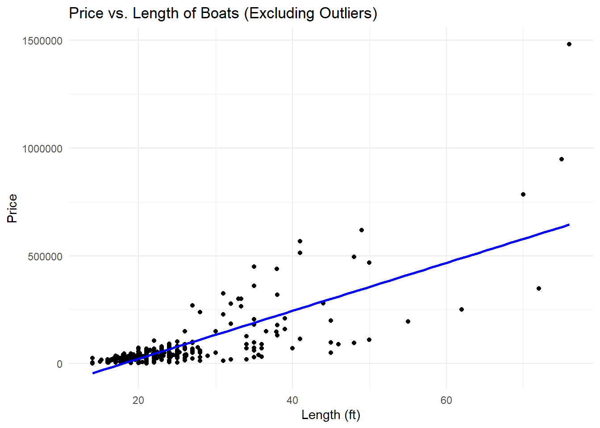
Roughly, I estimate the correlation to be around 0.60
Conditions for correlation:
- The variables price and length_ft are both quantitative.
- The scatter plot is straight enough.
- There are no outliers.
correlation <- cor(boats_filtered$length_ft, boats_filtered$price)
print(correlation)[1] 0.7660747Such a correlation coefficient indicates a strong positive linear relationship between the two variables.
These results indicate that an important factor directly related to a boat’s price is its length. The longer a boat, the more expensive it is.
ggplot(boats_filtered, aes(x = length_ft, y = price, color = condition)) +
geom_point() +
geom_smooth(method = "lm", se = FALSE) +
labs(x = "Length (ft)", y = "Price", color = "Condition", title = "Price vs. length of boats by condition") +
theme_minimal()`geom_smooth()` using formula = 'y ~ x'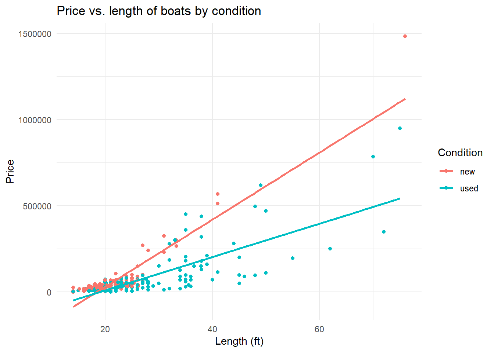
On this display, we notice that new unused boats tend to be much more expensive than used boats as the length increases. This validates one of the expectations in the beginning of our analysis. Therefore, in addition to length, the boat’s condition is also another factor controlling the price. And the reason for that is that customers tend to be more attracted by unused items, because for example, new items are much easier to repair than old ones in case of a problem. On the other hand, we can notice that boats on length less than 30 feet are quite cheap.
For additional investigation, we can ask whether the type of the boats would affect this relationship. Also, why are long boats mostly used? And finally, for the data points in the bottom, do they have similar manufacturing dates?
library(ggplot2)
condition_counts <- table(boats$condition)
condition_df <- data.frame(Condition = names(condition_counts), Count = as.numeric(condition_counts))
ggplot(condition_df, aes(x = "", y = Count, fill = Condition)) +
geom_bar(stat = "identity") +
coord_polar("y", start = 0) +
labs(title = "Distribution of Boats by Condition", fill = "Condition") +
theme_void() +
theme(legend.position = "bottom")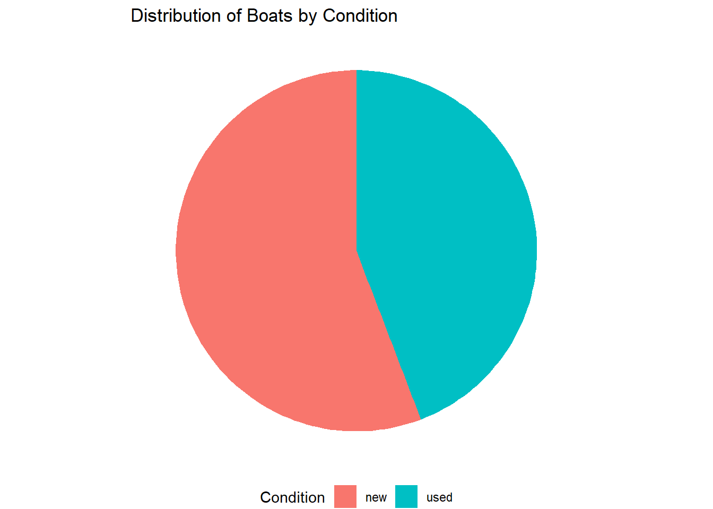
library(ggplot2)
manufacturer_counts <- table(boats_filtered$make)
manufacturer_counts_df <- as.data.frame(manufacturer_counts)
colnames(manufacturer_counts_df) <- c("Manufacturer", "Number of Boats")
manufacturer_counts_df <- manufacturer_counts_df[order(-manufacturer_counts_df$`Number of Boats`), ]
top_10_manufacturers <- head(manufacturer_counts_df, 10)
colors <- c("#FF9999", "#FFCC99", "#FFFF99", "#CCFF99", "#99FF99", "#99FFFF", "#9999FF", "#CC99FF", "#FF99FF", "#FF9999")
# BAR CHART CREATION
ggplot(top_10_manufacturers, aes(x = reorder(Manufacturer, -`Number of Boats`), y = `Number of Boats`, fill = Manufacturer)) +
geom_bar(stat = "identity") +
scale_fill_manual(values = colors) +
labs(title = "Top 10 Manufacturers by Number of Boats", x = "Manufacturer", y = "Number of Boats") +
theme_minimal() +
theme(axis.text.x = element_text(angle = 45, hjust = 1),
panel.grid.major.x = element_blank(),
legend.position = "none")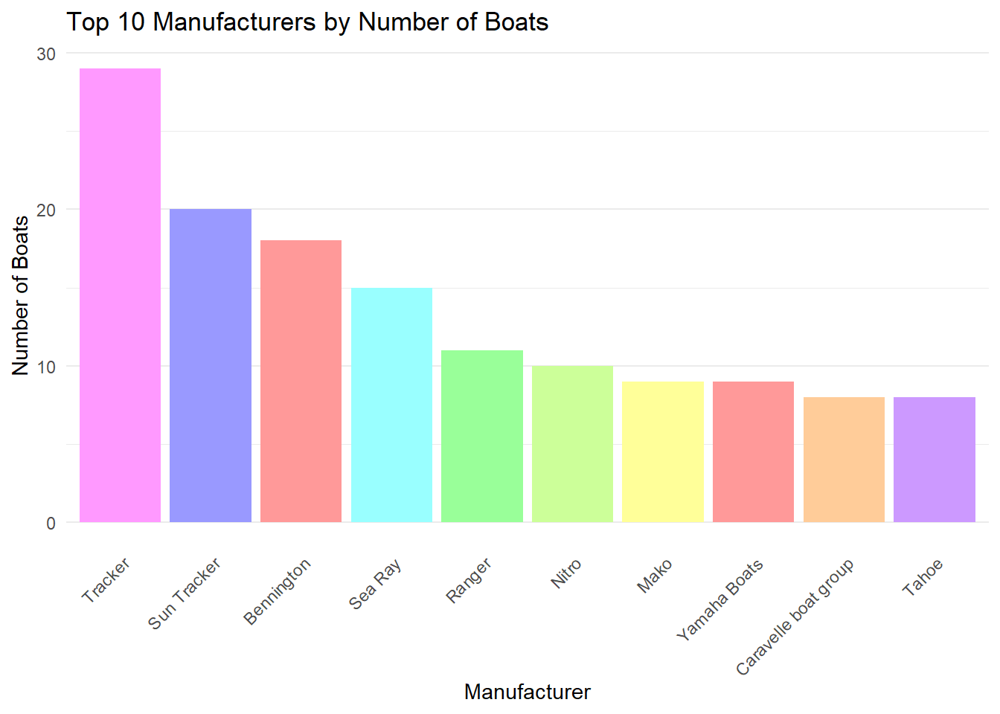
2. B. Putting it all together
Our goal from this analysis was to better understand the boat marketplace in the United States to understand which features control the prices’ tendencies. To do that, we got a dataset from the online website boattrader.com. It contains more than 300 boats listed for sale, described by many features like type, price, fuel type, etc. Our analysis of the data guided us to many conclusions.
The range of boat prices is very large (from $500 up to $1,800,000), but most of the prices are in the relatively cheap range (less than $250,000.) After calculating the standard deviation and doing the necessary comparisons, we have concluded that the distribution of prices is highly skewed. Also, used boats tend to have more regular prices compared to new boats, which have extravagant prices. Using contingency tables and proportion tables, we were able to see what kinds of combinations between boats’ type and boats’ fuel type. Based on the box plot of boat length by fuel type, we deduced that diesel boats tend to be larger than other fuel types. The association between price and length is positive, linear, moderately strong, with many outliers. The outliers can be anomalies and errors in entry, but they can also be valid data points which should be taken into consideration.
What we can deduce is that the longer the boat, the more expensive it is. Also, manufacturing companies like Tracker, Sun Tracker and Bennington sell the most at convenient prices. Moreover, new boats are much more present in the market than old boats. Additionally, powered boats fueled by diesel and gasoline are good deals.
An element we lack in this study is feedback from the customers: ratings, budget ranges for different people, etc.